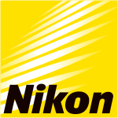
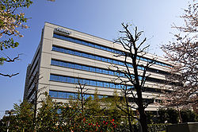

Nikon
|  | |
| 
West Building of Nikon in Nishi-Ōi, Tokyo
|
|
| Public | |
| Traded as | TYO: 7731 |
| Industry | Consumer electronics |
| Founded | July 25, 1917 Tokyo, Japan |
| Headquarters | Shinagawa, Tokyo, Japan |
|
Area served
|
Worldwide |
|
Key people
|
|
| Products | Still cameras, SLR cameras, DSLR cameras, binoculars / monoculars, binocular telescope, laser rangefinder, field microscopy, precision equipment, microscopes, ophthalmic lenses, electric fan, and instrumental products |
| Revenue | |
|
Number of employees
|
25,729 (March 31, 2016)[1] |
| Website | www |
Nikon Corporation (株式会社ニコン Kabushiki-gaisha Nikon) (UK: /ˈnɪkɒn/ or US: /ˈnaɪkɒn/; listen (help·info)[ɲikoɴ]), also known just as Nikon, is a Japanese multinational corporation headquartered in Tokyo, Japan, specializing in optics and imaging products.
Nikon's products include cameras, camera lenses, binoculars, microscopes, ophthalmic lenses, measurement instruments, rifle scopes, spotting scopes, and the steppers used in the photolithography steps of semiconductor fabrication, of which it is the world's second largest manufacturer.[2] The company is the eighth-largest chip equipment maker as reported in 2017.[3] The companies held by Nikon form the Nikon Group.[4] Among its products are Nikkor imaging lenses (for F-mount cameras, large format photography, photographic enlargers, and other applications), the Nikon F-series of 35 mm film SLR cameras, the Nikon D-series of digital SLR cameras, the Coolpix series of compact digital cameras, and the Nikonos series of underwater film cameras. Nikon's main competitors in camera and lens manufacturing include Canon, Sony, Fujifilm, Panasonic, Pentax, and Olympus.
Founded on July 25, 1917 as Nippon Kōgaku Kōgyō Kabushikigaisha (日本光学工業株式会社 "Japan Optical Industries Co., Ltd."), the company was renamed to Nikon Corporation, after its cameras, in 1988. Nikon is a member of the Mitsubishi group of companies (keiretsu).[5]
Contents
History[edit]
Nikon Corporation was established on 25 July 1917 when three leading optical manufacturers merged to form a comprehensive, fully integrated optical company known as Nippon Kōgaku Tōkyō K.K. Over the next sixty years, this growing company became a manufacturer of optical lenses (including those for the first Canon cameras) and equipment used in cameras, binoculars, microscopes and inspection equipment. During World War II the company operated thirty factories with 2,000 employees, manufacturing binoculars, lenses, bomb sights, and periscopes for the Japanese military.
Reception outside Japan[edit]
After the war Nippon Kōgaku reverted to producing its civilian product range in a single factory. In 1948, the first Nikon-branded camera was released, the Nikon I.[6] Nikon lenses were popularised by the American photojournalist David Douglas Duncan. Duncan was working in Tokyo when the Korean War began. Duncan had met a young Japanese photographer, Jun Miki, who introduced Duncan to Nikon lenses. From July 1950 to January 1951, Duncan covered the Korean War.[7] Fitting Nikon optics (especially the NIKKOR-P.C 1:2 f=8,5 cm)[8] to his Leica rangefinder cameras produced high contrast negatives with very sharp resolution at the centre field.[9]
Names and brands[edit]
Founded in 1917 as Nippon Kōgaku Kōgyō Kabushikigaisha (日本光学工業株式会社 "Japan Optical Industries Corporation"), the company was renamed Nikon Corporation, after its cameras, in 1988. The name Nikon, which dates from 1946, sounds like a merging of Nippon Kōgaku (日本光学: "Japan Optical") and Zeiss's brand Ikon. This would cause some early problems in Germany as Zeiss complained that Nikon violated its trademarked camera. From 1963 to 1968 the Nikon F in particular was therefore labeled 'Nikkor'.[10]
The Nikkor brand was introduced in 1932, a westernised rendering of an earlier version Nikkō (日光), an abbreviation of the company's original full name[11] (Nikkō coincidentally means "sunlight" and is the name of a Japanese town.). Nikkor is the Nikon brand name for its lenses.
Another early brand used on microscopes was Joico,[12] an abbreviation of "Japan Optical Industries Co"[citation needed]. Expeed is the brand Nikon uses for its image processors since 2007.
The rise of the Nikon F series[edit]


The Nikon SP and other 1950s and 1960s rangefinder cameras competed directly with models from Leica and Zeiss. However, the company quickly ceased developing its rangefinder line to focus its efforts on the Nikon F single-lens reflex line of cameras, which was successful[citation needed] upon its introduction in 1959. For nearly 30 years, Nikon's F-series SLRs were the most widely used small-format cameras among professional photographers[citation needed], as well as by the U.S. space program.
Nikon popularised many features in professional SLR photography[citation needed], such as the modular camera system with interchangeable lenses, viewfinders, motor drives, and data backs; integrated light metering and lens indexing; electronic strobe flashguns instead of expendable flashbulbs; electronic shutter control; evaluative multi-zone "matrix" metering; and built-in motorized film advance. However, as autofocus SLRs became available from Minolta and others in the mid-1980s, Nikon's line of manual-focus cameras began to seem out of date[citation needed].
Despite introducing one of the first autofocus models, the slow and bulky F3AF, the company's determination to maintain lens compatibility with its F-mount prevented rapid advances in autofocus technology. Canon introduced a new type of lens-camera interface with its entirely electronic Canon EOS cameras and Canon EF lens mount in 1987. The much faster lens performance permitted by Canon's electronic focusing and aperture control prompted many professional photographers (especially in sports and news) to switch to the Canon system through the 1990s.[13]
Digital photography[edit]
Nikon created some of the first digital SLRs (DSLRs, Nikon NASA F4) for NASA, used in the Space Shuttle since 1991.[14] After a 1990s partnership with Kodak to produce digital SLR cameras based on existing Nikon film bodies, Nikon released the Nikon D1 SLR under its own name in 1999. Although it used an APS-C-size light sensor only 2/3 the size of a 35 mm film frame (later called a "DX sensor"), the D1 was among the first digital cameras to have sufficient image quality and a low enough price for some professionals (particularly photojournalists and sports photographers) to use it as a replacement for a film SLR. The company also has a Coolpix line which grew as consumer digital photography became increasingly prevalent through the early 2000s.
Through the mid-2000s, Nikon's line of professional and enthusiast DSLRs and lenses including their back compatible AF-S lens line remained in second place behind Canon in SLR camera sales, and Canon had several years' lead in producing professional DSLRs with light sensors as large as traditional 35 mm film frames.[15] All Nikon DSLRs from 1999 to 2007, by contrast, used the smaller DX size sensor.
Then, 2005 management changes at Nikon led to new camera designs such as the full-frame Nikon D3 in late 2007, the Nikon D700 a few months later, and mid-range SLRs. Nikon regained much of its reputation among professional and amateur enthusiast photographers as a leading innovator in the field, especially because of the speed, ergonomics, and low-light performance of its latest models.[16][unreliable source?] The mid-range Nikon D90, introduced in 2008, was also the first SLR camera to record video.[17][18] Since then video mode has been introduced to many more of the Nikon DSLR cameras including the Nikon D3S, Nikon D7000, Nikon D5100, Nikon D3100, Nikon D3200 and Nikon D5100.[19][20][21][22][23] More recently, Nikon has released a photograph and video editing suite called ViewNX to browse, edit, merge and share images and videos.[24][25][26]
Film camera production[edit]
Once Nikon introduced affordable consumer-level DSLRs such as the Nikon D70 in the mid-2000s, sales of its consumer and professional film cameras fell rapidly, following the general trend in the industry. In January 2006, Nikon announced it would stop making most of its film camera models and all of its large format lenses, and focus on digital models.[27] Nevertheless, Nikon is the only[citation needed] major camera manufacturer still making film SLRs. The remaining model is the professional Nikon F6 with the last amateur model, FM10, having been discontinued.
Movie camera production[edit]
Although few models were introduced, Nikon made movie cameras as well. The R10 and R8 SUPER ZOOM Super 8 models (introduced in 1973) were the top of the line and last attempt for the amateur movie field. The cameras had a special gate and claw system to improve image steadiness and overcome a major drawback of Super 8 cartridge design. The R10 model has a high speed 10X macro zoom lens.
Contrary to other brands, Nikon never attempted to offer projectors or their accessories.
Thai operations[edit]
Nikon has shifted much of its manufacturing facilities to Thailand, with some production (especially of Coolpix cameras and some low-end lenses) in Indonesia. The company constructed a factory in Ayuthaya north of Bangkok in Thailand in 1991. By the year 2000, it had 2,000 employees. Steady growth over the next few years and an increase of floor space from the original 19,400 square meters (208,827 square feet) to 46,200 square meters (497,300 square feet) enabled the factory to produce a wider range of Nikon products. By 2004, it had more than 8,000 workers.
The range of the products produced at Nikon Thailand include plastic molding, optical parts, painting, printing, metal processing, plating, spherical lens process, aspherical lens process, prism process, electrical and electronic mounting process, silent wave motor and autofocus unit production.
As of 2009, all of Nikon's Nikon DX format DSLR cameras and the D600, a prosumer FX camera, are produced in Thailand, while their professional and semi-professional Nikon FX format (full frame) cameras (D700, D3, D3S, D3X, D4, D800 and the retro-styled Df) are built in Japan, in the city of Sendai. The Thai facility also produces most of Nikon's digital "DX" zoom lenses, as well as numerous other lenses in the Nikkor line.
Cultural activities[edit]
In Japan, Nikon runs the Nikon Salon exhibition spaces, runs the Nikkor Club for amateur photographers (to whom it distributes the series of Nikon Salon books), and arranges the Ina Nobuo Award, Miki Jun Award and Miki Jun Inspiration Awards.
Sponsorship[edit]
As of November 19, 2013, Nikon is the "Official Camera" of Walt Disney World Resort and Disneyland Resort.[28]
Nikon is the official co-sponsor of Galatasaray SK Football Team.[29][30][31]
In 2014 Nikon sponsored the Copa Sadia do Brasil 2014 and the AFC Champions League.[32]
Nikon-Essilor Co. Ltd.[edit]
In 1999, Nikon and Essilor have signed a Memorandum of understanding to form a global strategic alliance in corrective lenses by forming a 50/50 joint venture in Japan to be called Nikon-Essilor Co. Ltd.
The main purpose of the joint venture is to further strengthen the corrective lens business of both companies. This will be achieved through the integrated strengths of Nikon's strong brand backed up by advanced optical technology and strong sales network in Japanese market, coupled with the high productivity and worldwide marketing and sales network of Essilor, the world leader in this industry.[33]
Nikon-Essilor Co. Ltd. started its business in January 2000, responsible for research, development, production and sales mainly for ophthalmic optics.[34]
Recent development[edit]
The company developed the first lithography equipment from Japan which is essential for semiconductor manufacturing. Devices from Nikon enjoyed high demand from global chipmakers, including Intel, and Nikon became the world's leading producer of semiconductor lithography systems until the 1990s. In recent years, ASML, a Dutch company, has grabbed over 80 percent of the global market in 2015 by adopting an open innovation method of product development. Nikon saw a sharp drop in its market share from less than 40 percent in early 2000s.[35][36] The company has been losing an estimated ¥17 billion a year in its precision instruments unit. Furthermore, revenue from its camera business has dropped 30% in three years prior to fiscal 2015.[37] In 2013, it forecast the first drop in sales from interchangeable lens cameras since Nikon's first digital SLR in 1999.[35] The company's net profit has fallen from a peak of ¥75.4 billion (fiscal 2007) to ¥18.2 billion for fiscal 2015.[37] Nikon plans to reassign over 1,500 employees resulting in job cuts of 1,000 by 2017 as the company shifts focus to medical and industrial devices business for growth.[38][37][36]
Cameras[edit]
| Wikimedia Commons has media related to Nikon cameras. |
In January 2006 Nikon announced the discontinuation of all but two models of its film cameras, focusing its efforts on the digital camera market.[39] It continues to sell the fully manual FM10, and still offers the high-end fully automatic F6.[40][41] Nikon has also committed to service all the film cameras for a period of ten years after production ceases.[42]


Film 35 mm SLR cameras with manual focus[edit]
High-end (Professional - Intended for professional use, heavy duty and weather resistance)
- Nikon F series (1959, known in Germany for legal reasons as the Nikkor F)
- Nikon F2 series (1971)
- Nikon F3 series (1980)
Midrange
- Nikkorex series (1960)
- Nikkormat F series (1965, known in Japan as the Nikomat F series)
- Nikon FM (1977)
- Nikon FM2 series (1982)
- Nikon FM10 (1995)
- Nikon FM3A (2001)
Midrange with electronic features
- Nikkormat EL series (1972, known in Japan as the Nikomat EL series)
- Nikon EL2 (1977)
- Nikon FE (1978)
- Nikon FE2 (1983)
- Nikon FA (1983)
- Nikon F-601M (1990, known in North America as the N6000)
- Nikon FE10 (1996)
Entry-level (Consumer)
- Nikon EM (1979)
- Nikon FG (1982)
- Nikon FG-20 (1984)
- Nikon F-301 (1985, known in North America as the N2000)
Film APS SLR cameras[edit]
-

The Nikon Pronea 600i
-

The Nikon Pronea S


Film 35 mm SLR cameras with autofocus[edit]

High-end (Professional - Intended for professional use, heavy duty and weather resistance)
- Nikon F3AF (1983, modified F3 body with Autofocus Finder DX-1)
- Nikon F4 (1988) - (World's first professional auto-focus SLR camera and world's first professional SLR camera with a built-in motor drive)
- Nikonos RS (1992) (Professional when reviewed in underwater conditions) - (World's first underwater auto-focus SLR camera)[45]
- Nikon F5 (1996)
- Nikon F6 (2004)
High-end (Prosumer - Intended for pro-consumers who want the main mechanic/electronic features of the professional line but don't need the same heavy duty/weather resistance)
- Nikon F-501 (1986, known in North America as the N2020)
- Nikon F-801 (1988, known in the U.S. as the N8008)
- Nikon F-801S (1991, known in the U.S. as the N8008S)
- Nikon F90 (1992, known in the U.S. as the N90)
- Nikon F90X (1994, known in the U.S. as the N90S)
- Nikon F80 (2000, known in the U.S. as the N80)
- Nikon F100 (1999)
Mid-range (Consumer)
- Nikon F-601 (1990, known in the U.S. as the N6006)
- Nikon F70 (1994, known in the U.S. as the N70)
- Nikon F75 (2003, known in the U.S. as the N75)
Entry-level (Consumer)
- Nikon F-401 (1987, known in the U.S. as the N4004)
- Nikon F-401S (1989, known in the U.S. as the N4004S)
- Nikon F-401X (1991, known in the U.S. as the N5005)
- Nikon F50 (1994, known in the U.S. as the N50)
- Nikon F60 (1999, known in the U.S. as the N60)
- Nikon F65 (2000, known in the U.S. as the N65)
- Nikon F55 (2002, known in the U.S. as the N55)
Professional Rangefinder cameras[edit]
- Nikon I (1948)[46]
- Nikon M (1949)[47]
- Nikon S (1951)[48]
- Nikon S2 (1954)[49]
- Nikon SP (1957)[50]
- Nikon S3 (1958)[51]
- Nikon S4 (1959) (entry-level)[52]
- Nikon S3M (1960)[53]
- Nikon S3 2000 (2000)[54]
- Nikon SP Limited Edition (2005)[55]
Compact cameras[edit]
Between 1983 and the early 2000s[56] a broad range of compact cameras were made by Nikon. Nikon first started by naming the cameras with a series name (like the L35/L135-series, the RF/RD-series, the W35-series, the EF or the AW-series). In later production cycles, the cameras were double branded with a series-name on the one and a sales name on the other hand. Sales names were for example Zoom-Touch for cameras with a wide zoom range, Lite-Touch for ultra compact models, Fun-Touch for easy to use cameras and Sport-Touch for splash water resistance. After the late 1990s, Nikon dropped the series names and continued only with the sales name. Nikon's APS-cameras were all named Nuvis.
The cameras came in all price ranges from entry-level fixed-lens-cameras to the top model Nikon 35Ti and 28Ti with titanium body and 3D-Matrix-Metering.
Movie cameras[edit]
- Double 8 (8mm)
- NIKKOREX 8 (1960)
- NIKKOREX 8F (1963)
- Super 8
- Nikon Super Zoom 8 (1966)
- Nikon 8X Super Zoom (1967)
- Nikon R8 Super Zoom (1973)
- Nikon R10 Super Zoom (1973)
Professional Underwater cameras[edit]
- Nikonos I Calypso (1963, originally known in France as the Calypso/Nikkor)
- Nikonos II (1968)
- Nikonos III (1975)
- Nikonos IV-A (1980)
- Nikonos V (1984)
- Nikonos RS (1992)[57] (World's first underwater Auto-Focus SLR camera)[45]
Digital cameras[edit]

Nikon's raw image format is NEF, for Nikon Electronic File. The "DSCN" prefix for image files stands for "Digital Still Camera - Nikon."
Digital compact cameras[edit]
The Nikon Coolpix series are digital compact cameras produced in many variants: Superzoom, bridge, travel-zoom, miniature compact and waterproof/rugged cameras. The top compact cameras are several "Performance" series indicated by a "P...".
Larger sensor compact cameras[edit]
Coolpix series since 2008 listed.
- Nikon Coolpix P6000, 2008-08-07 (CCD, 14 megapixels, 4x zoom)
- Nikon Coolpix P7000, 2010-09-08 (CCD, 10.1 megapixels, 7x zoom)
- Nikon Coolpix P7100, 2011-08-24 (roughly same specifications as predecessor)
- Nikon Coolpix P7700
- Nikon Coolpix A, 2013-03-05 (16MP DX-CMOS sensor)
- Nikon Coolpix P7800

Light-weight fast lens compact cameras[edit]
Bridge cameras[edit]
- Nikon Coolpix L810, Feb, 2012-16 MP, 26x optical zoom, no wi-fi,fixed LCD, ISO 80-1600
- Nikon Coolpix L820, Jan, 2013-16 MP, 30x optical zoom, no wi-fi, fixed LCD, ISO 125-3200
- Nikon Coolpix L830, Jan, 2014-16 MP, 34x optical zoom with 68x Dynamic Fine Zoom, no wi-fi, tilting LCD, ISO 125-1600 (3200 in Auto)
- Nikon Coolpix L840 Feb, 2015-16 MP, 38x optical zoom with 76x Dynamic Fine Zoom,Built-in Wi-Fi® and NFC (Near Field Communication),3 inch high-resolution tilting LCD, ISO 125 - 1600
ISO 3200, 6400 (available when using Auto mode)
- Nikon Coolpix P500, Feb, 2011-12.1 MP, 36x optical zoom, tilt LCD, ISO 160-3200
- Nikon Coolpix P510, Feb, 2012-16.1 MP, 41.7x optical zoom (24–1000mm), no wi-fi, vari-angle LCD, ISO 100-3200
- Nikon Coolpix P520, Jan, 2013-18.1 MP, 42x optical zoom, optional wi-fi, vari-angle LCD, ISO 80-3200
- Nikon Coolpix P530, Feb, 2014-16.1 MP, 42x optical zoom & 84x Dynamic Fine Zoom, opt wi-fi, fixed LCD, ISO 100-1600 (ISO 3200, 6400 in PASM mode)
- Nikon Coolpix P600, Feb, 2014-16.1 MP, 60x optical zoom and 120 Dynamic Fine Zoom, built in wi-fi, vari-angle LCD, ISO 100-1600 (ISO 3200, 6400 in PASM mode)

Mirrorless interchangeable-lens cameras[edit]
Nikon 1 series - CX sensor, Nikon 1 mount lenses
- Nikon 1 J1, September 21, 2011, : 10 MP
- Nikon 1 V1, September 21, 2011, : 10 MP[58]
- Nikon 1 J2, August 10, 2012, : 10 MP
- Nikon 1 V2,[59] October 24, 2012, : 14 MP
- Nikon 1 J3, January 8, 2013, : 14 MP
- Nikon 1 S1, January 8, 2013, : 10 MP
- Nikon 1 AW1, : 14 MP
- Nikon 1 V3, : 18 MP, tilt LCD
- Nikon 1 J4, : 18 MP
- Nikon 1 J5, : 20 MP
|
||||||||||||||||||||||||||||||||||||||||||||||||||||||||||||||||||||||||||||||||||||||||||||||||||||||||||||||||||||||||||||||||||||||||||||||


Digital single lens reflex cameras[edit]

High-end (Professional - Intended for professional use, heavy duty and weather resistance)
- Nikon D1, DX sensor, June 15, 1999 - Discontinued
- Nikon D1X, DX sensor, February 5, 2001 - Discontinued
- Nikon D1H, DX sensor, high speed, February 5, 2001 - Discontinued
- Nikon D2H, DX sensor, high speed, July 22, 2003 - Discontinued
- Nikon D2X, DX sensor, September 16, 2004 - Discontinued
- Nikon D2HS, DX sensor, high speed, February 16, 2005 - Discontinued
- Nikon D2XS, DX sensor, June 1, 2006 - Discontinued
- Nikon D3, FX/Full Frame sensor, August 23, 2007 - Discontinued
- Nikon D3X, FX/Full Frame sensor, December 1, 2008 - Discontinued
- Nikon D3S, FX/Full Frame sensor, October 14, 2009 - Discontinued
- Nikon D4, FX/Full Frame sensor, January 6, 2012 - Discontinued[60]
- Nikon D4S, FX/Full Frame sensor, February 25, 2014 - Discontinued
- Nikon D5, FX/Full Frame sensor, January 5, 2016

High-end (Prosumer - Intended for pro-consumers who want the main mechanical/weather resistance and electronic features of the professional line but don't need the same heavy duty)
- Nikon D100, DX sensor, February 21, 2002 - Discontinued
- Nikon D200, DX sensor, November 1, 2005 - Discontinued
- Nikon D300, DX sensor, August 23, 2007 - Discontinued[61]
- Nikon D300S, DX sensor, July 30, 2009 - Discontinued
- Nikon D700, FX/Full Frame sensor, July 1, 2008 – Discontinued
- Nikon D800, FX/Full Frame sensor, February 7, 2012 - Discontinued
- Nikon D800E, FX/Full Frame sensor, April 2012 - Discontinued
- Nikon D600, FX/Full Frame sensor, September 13, 2012 - Discontinued
- Nikon D610, FX/Full Frame sensor, October 2013
- Nikon Df, FX/Full Frame sensor, November 2013
- Nikon D810, FX/Full Frame sensor, June 2014
- Nikon D750, FX/Full Frame sensor, September 11, 2014[62]
- Nikon D810A, FX/Full Frame Sensor, February 2015
- Nikon D500, DX sensor, January 5, 2016
- Nikon D850, FX/Full Frame sensor, announced July 25, 2017[63]

Midrange and professional usage cameras with DX sensor
- Nikon D70, January 28, 2004 - Discontinued
- Nikon D70S, April 20, 2005 - Discontinued
- Nikon D80, August 9, 2006 - Discontinued
- Nikon D90, August 27, 2008[64] - Discontinued
- Nikon D7000, September 15, 2010 - Discontinued[65]
- Nikon D7100, February 21, 2013[66]
- Nikon D7200, March 2, 2015[67]
- Nikon D7500, April 12, 2017[68]
Upper-entry-level (Consumer) - DX sensor
Along with the D750 and D500 above, these are the only Nikon DSLR's with the articulated (tilt-and-swivel) display.
- Nikon D5000, April 14, 2009 - Discontinued
- Nikon D5100, April 5, 2011 - Discontinued
- Nikon D5200, November 6, 2012 Discontinued[69]
- Nikon D5300, October 17, 2013
- Nikon D5500, January 5, 2015
- Nikon D5600, November 10, 2016
Entry-level (Consumer) - DX sensor
- Nikon D50, April 20, 2005 - Discontinued
- Nikon D40, November 16, 2006 - Discontinued
- Nikon D40X, March 6, 2007 - Discontinued
- Nikon D60, January 29, 2008 - Discontinued
- Nikon D3000, July 30, 2009 – Discontinued
- Nikon D3100, August 19, 2010 - Discontinued[70]
- Nikon D3200, April 19, 2012 - Discontinued (Available in U.S.A. only)[71]
- Nikon D3300, January 7, 2014 - Discontinued (Available in U.S.A. only)
- Nikon D3400, August 17, 2016[72]
|
||||||||||||||||||||||||||||||||||||||||||||||||||||||||||||||||||||||||||||||||||||||||||||||||||||||||||||||||||||||||||||||||||||||||||||||||||||||||||||||||||||||||||||||||||||||||||||||||||||||||||||||||||||||||||||||||||||||||||||||||||||||||||||||||||||||||||||||||||||||||||||||||||||||||||||||||||||||||||||||||||||||||||||||||||||||||||||||||||||||||||||||||||||||||||||||||||||||||||||||||||||||||||||||||||||||||||||||||||||||||||||||||||||||||||||||||||||||||||||||||||||||||||||||||||||||||||||||||||||||||||||||||||||||||||||||||||||||||||||||||||||||||||||||||||||||||||||||||||||||||||||||||||||||||||||||||||||||||||||||||||||||||||||||||||||||||||||||||||||||||||||||||||||||||||||||||||||||||||||||||||||||||||||||||||||||||||||||||||||||||||||||||||||||||||||||||||||||||||||||||||||||||||||||||||||||||||||||||||||||||||||||||||||||||||||||||||||||||||||||||||||||||||||||||||||||||||||||||||||||||||||||||||||||||||||||||||||||||||||||||||||||||||||||||||||||||||||||||||||

Photo optics[edit]
Lenses for F-mount cameras[edit]
The Nikon F-mount is a type of interchangeable lens mount developed by Nikon for its 35 mm Single-lens reflex cameras. The F-mount was first introduced on the Nikon F camera in 1959.
- See Nikon F-mount → Nikkor
- Lenses with integrated motors: List of Nikon F-mount lenses with integrated autofocus motors
Other lenses for photography and imaging[edit]
Electronic flash units[edit]
Nikon uses the term Speedlight for its electronic flashes. Recent models include the SB-R200, SB-300, SB-400, SB-600, SB-700, SB-800, SB-900, SB-910 and R1C1.
Film scanners[edit]

Nikon's digital capture line also includes a successful range of dedicated scanners for a variety of formats, including Advanced Photo System (IX240), 35 mm, and 60 mm film.
- (1988) LS-3500 (4096x6144, 4000 dpi, 30 bits per pixel) HP-IB (requires a third-party NuBus card; intended for Mac platforms, for which there is a Photoshop plug-in).[73]
- (1992) Coolscan LS-10 (2700 dpi) SCSI. First to be named "Coolscan" to denote LED illumination.[74]
- (1994) LS-3510AF (4096x6144, 4000 dpi, 30 bits per pixel) Auto-focus SCSI (usually employed on Mac platforms with a Photoshop plug-in; TWAIN is available for PC platforms).[75]
- (1995) LS-4500AF (4 x 5 inch and 120/220 formats, 1000x2000 dpi, 35mm format 3000x3000). 12bit A/D. SCSI. Fitted with auto-focus lens.[76]
- (1996) Super Coolscan LS-1000 (2592x3888, 2700 dpi) SCSI. scan time cut by half[77]
- (1996) Coolscan II LS-20 E (2700 dpi) SCSI[78]
- (1998) Coolscan LS-2000 (2700 dpi, 12-bit) SCSI, multiple sample, "CleanImage" software[79]
- (1998) Coolscan III LS-30 E (2700 dpi, 10-bit) SCSI[80]
- (2001) Coolscan IV LS-40 ED (2900 dpi, 12-bit, 3.6D) USB, SilverFast, ICE, ROC, GEM[81]
- (2001) Coolscan LS-4000 ED (4000 dpi, 14-bit, 4.2D) Firewire[82]
- (2001) Coolscan LS-8000 ED (4000 dpi, 14-bit, 4.2D) Firewire, multiformat[83]
- (2003) Coolscan V LS-50 ED (4000 dpi, 14-bit, 4.2D) USB
- (2003) Super Coolscan LS-5000 ED (4000 dpi, 16bit, 4.8D) USB
- (2004) Super Coolscan LS-9000 ED (4000 dpi, 16bit, 4.8D) Firewire, multiformat
Nikon introduced its first scanner, the Nikon LS-3500 with a maximum resolution of 4096 x 6144 pixels, in 1988. Prior to the development of 'cool' LED lighting this scanner used a halogen lamp (hence the name 'Coolscan' for the following models). The resolution of the following LED based Coolscan model didn't increase but the price was significantly lower. Colour depth, scan quality, imaging and hardware functionality as well as scanning speed was gradually improved with each following model. The final 'top of the line' 35mm Coolscan LS-5000 ED was a device capable of archiving greater numbers of slides; 50 framed slides or 40 images on film roll. It could scan all these in one batch using special adapters. A single maximum resolution scan was performed in no more than 20 seconds as long as no post-processing was also performed. With the launch of the Coolscan 9000 ED Nikon introduced its most up-to-date film scanner which, like the Minolta Dimage scanners were the only film scanners that, due to a special version of Digital ICE, were able to scan Kodachrome film reliably both dust and scratch free. In late 2007 much of the software's code had to be rewritten to make it Mac OS 10.5 compatible. Nikon announced it would discontinue supporting its Nikon Scan software for the Macintosh as well as for Windows Vista 64-bit.[84] Third-party software solutions like SilverFast or Vuescan provide alternatives to the official Nikon drivers and scanning software, and maintain updated drivers for most current operating systems. Between 1994 and 1996 Nikon developed three flatbed scanner models named Scantouch, which couldn't keep up with competitive flatbed products and were hence discontinued to allow Nikon to focus on its dedicated film scanners.
Sport optics[edit]
Binoculars[edit]
- Sprint IV
- Sportstar IV
- Travelite V
- Travelite VI
- Travelite EX
- Mikron
- Action VII
- Action VII Zoom
- Aculon
- Action EX
- Sporter I
- Venturer 8/10x32
- Venturer 8x42
- Prostaff 5
- Prostaff 7
- Monarch ATB
- Monarch 3
- Monarch 5
- Monarch 7
- StabilEyes
- Superior E
- Marine
- EDG II
Spotting scopes[edit]
- Prostaff 3 16-48x60
- Prostaff 5 60
- Prostaff 5 80
- Spotter XL II WP
- Spotting Scope R/A II
- Spotting Scope 80
- Fieldscope 60mm
- Fieldscope ED78/ EDII
- Fieldscope III/EDIII
- Fieldscope ED82
- Fieldscope ED50
- Fieldscopes EDG 65 /85
- Fieldscope EDG 85 VR
Rifle scopes[edit]
- BLACK
- Monarch 7
- Monarch 5
- Monarch 3
- Monarch
- Laser IRT
- Prostaff 5
- Encore
- Coyote Special
- Slughunter
- Inline
- Buckmaster II
- Nuckmaster
- AR
- ProStaff II
- Prostaff
- Team REALTREE
- Rimfire
- Handgun
Nikon Metrology[edit]
Overview
Nikon Metrology, a division of Nikon, produces hardware and software products for 2D & 3D measurement from nano to large scale measurement volumes. Products include Optical Laser Probes, X-ray computed tomography, Coordinate-measuring machine (CMM),Laser Radar Systems (LR), Microscopes, Portable CMMs, Large Volume Metrology, Motion Measurement and Adaptive Robotic Controls, Semiconductor Systems, Metrology Software including CMM-Manager, CAMIO Studio, Inspect-X, Focus, and Automeasure. Measurements are performed using tactile and non-contact probes, measurement data is collected in software and processed for comparison to nominal CAD (Computer-aided design) or part specification or for recreating / reverse engineering physical work pieces.
Nikon Metrology Origins
The origins of Nikon go back to 1917 when three Jananese optical manufacturers joined to form Nippon Kogaku KK ('Japan Optics'). In 1925 the microscope having revolving nosepiece and interchangeable objectives was produced. Significant growth for the microscopy division occurs over the next 50 years as Nikon pioneers development of polarising and stereo microscopes along with new products for measuring and inspection (Metrology) markets. These new products include devices targeted for industrial use such as optical comparators, autocollimators, profile projector and automated vision based systems. Continued effort through the next three decades yield the release of products including the Optiphot and Labophot microscopes, Diaphot microscope, the Eclipse range of infinity optics, and finally the DS camera series and the Coolscope with the advent of digital sensors. With the acquisition of Metris in 2009 the Nikon Metrology division was born. Nikon Metrology products include a full range of both 2D & 3D, optical, tactile, non-contact, and X-Ray Metrology solutions ranging from nanometer resolution on microscopic samples to μm resolution in volumes large enough to house a commercial airliner.[85]
Nikon Metrology Products
- Coordinate-Measuring-Machines
- Bridge, Gantry and Horizontal Arm CMMs
- Digital / Analog Tactile and / or Non-Contact Optical sensors
- Portable arms - 6 and 7 axis models
- Laser Scanning - Optical Line Scanners in single Line and Multi-line (Cross Scanner) configurations
- X-ray-and-CT-Inspection
- Video-Microscope-Measuring - Optical Probe and Multi-Sensor options available
- Microscope-Systems
- Large Volume Systems
- Application Software - several options available depending on specific application and hardware.
Other products[edit]
Nikon also manufactures ophthalmic equipment, loupes, monoculars, binocular telescopes, microscopes, laser rangefinders,[86] cameras for microscopy, optical and video-based measurement equipment, scanners and steppers for the manufacture of integrated circuits and liquid crystal displays, and semiconductor device inspection equipment. The steppers and scanners represent about one third of the income for the company as of 2008.[87] Nikon has also manufactured eyeglasses, sunglasses, and glasses frames, under the brands Nikon, Niji, Nobili-Ti, Presio, and Velociti VTI.[88]
Cultural references[edit]
- Singer Paul Simon referenced Nikon Cameras in his 1973 song "Kodachrome."[89]
- Dexter Morgan, main character of the Showtime series Dexter, can be seen using a Nikon camera throughout the show.
- In the movie Hackers, the character "Lord Nikon" got his alias because of his photographic memory.
- In the lyrics to the Oak Ridge Boys song "American Made", a reference to Nikon Cameras is made ( "I got a Nikon camera, a Sony color tv").
- In the movie "The French Connection", the drug dealer gives his girlfriend a Nikon F camera.
- In the film "The Most Beautiful" by Akira Kurosawa, the "East Asian Optical Company" scenes were filmed at the Nippon Kogaku factory in Totsuka, Yokohama, Japan.[90]
Awards and recognition[edit]
Nikon was ranked 134th among India's most trusted brands according to the Brand Trust Report 2012, a study conducted by Trust Research Advisory. In the Brand Trust Report 2013, Nikon was ranked 28th among India's most trusted brands and subsequently, according to the Brand Trust Report 2014, Nikon was ranked 178th among India's most trusted brands.[91]
See also[edit]
Notes and references[edit]
- ^ a b c d "Annual Report 2015" (PDF). Nikon corporation. Retrieved 2015-10-03.
- ^ "Analyst: Top IC suppliers remain largely unchanged 2007". Solid State Technology. Electro IQ. 2008-05-18. Retrieved 2010-02-05.
- ^ "Nikon files patent case against ASML, Carl Zeiss over lithography tech". Reuters. 24 Apr 2017. Retrieved 24 April 2017.
- ^ "Nikon Group Companies". Nikon Corporation. Retrieved 2010-02-05.
- ^ "Nikon Company Profile". mitsubishi.com committee. Retrieved 2011-01-27.
- ^ "Nikon Camera History". Retrieved 2010-02-05.
- ^ "David Douglas Duncan". Harry Ransom Center. The University of Texas at Austin. Retrieved 2010-02-05.
- ^ In German: Peter Braczko, Nikon Faszination, Geschichte – Technik – Mythos von 1917 bis heute, Hückelhoven 1992, ISBN 3-88984-047-7, S. 27ff und Tafel 2.
- ^ Kouichi Ohsita (2007-09-30). "The Thousand and One Nights, Tale 36 : Nikkor P.C 8.5 cm f/2". NIKKOR Club Quarterly magazine. Nikon Corporation. Retrieved 2010-02-05.
- ^ . Amateur Photographer Magazine (UK). 2009-10-17. p. 61. Missing or empty
|title=(help) - ^ "The 75th Anniversary of NIKKOR Lenses". Nikon Corporation. 18 March 2008. Archived from the original on 7 April 2008. Retrieved 5 February 2010.
- ^ "Corporate History". Nikon Corporation. Retrieved 2010-02-05.
- ^ "Canon EOS Resources: SLR Cameras - Modern Classic SLR Series". Photography in Malaysia. Retrieved 2010-02-05.
- ^ "NASA F4 Electronic Still Camera". NikonWeb.com. Retrieved 2010-02-05.
- ^ Ken Rockwell. "Nikon vs. Canon". Kenrockwell.com. Retrieved 2010-02-05.
- ^ "Some Initial Thoughts on The Nikon D700". Luminous Landscape. 2008-07-02. Retrieved 2010-02-05.
- ^ "Nikon D90 plus hands-on preview". Digital Photography Review. 2008-08-27. Retrieved 2010-02-05.
- ^ "Digital SLR Camera Nikon D90". Nikon Corporation. 2008-08-27. Retrieved 2010-02-05.
- ^ "Nikon Products D3S". Nikon Canada.
- ^ "Nikon Products D7000". Nikon Canada.
- ^ "Nikon Products D5100". Nikon Canada.
- ^ "Nikon Products D3100". Nikon Canada.
- ^ "Nikon Products D3200". Nikon Canada.
- ^ "ViewNX". nikonusa.com.
- ^ "Nikon - Imaging Products - ViewNX 2". Nikon Corpation. Retrieved 30 December 2016.
- ^ "Nikon releases ViewNX 2 software". DP Review. Retrieved 30 December 2016.
- ^ "Nikon Strengthens Digital Focus for 2006". Nikon Corporation. 2006-02-14. Archived from the original on August 26, 2014. Retrieved 2010-02-05.
- ^ Inc., Nikon. "Nikon And Walt Disney World And Disneyland Resorts Team Up To Capture Magical Photo Moments". Retrieved 30 December 2016.
- ^ "NIKON BECOMES THE OFFICIAL SPONSOR OF GALATASARAY FOOTBALL TEAM". Nikon. Retrieved 15 October 2012.
- ^ "Galatasaray, Nikon ile sponsorluk anlaşması imzaladı". Zaman Newspaper. Retrieved 20 October 2012.
- ^ Çelik, Hakan. "Nikon ve Galatasaray". Posta Newspaper. Retrieved 20 October 2012.
- ^ "Nikon - Corporate Information - Sponsorship Activities". Retrieved 30 December 2016.
- ^ "Nikon - News - Nikon, Japan and Essilor, France agree to establish a joint company". Archived from the original on 19 February 2018. Retrieved 30 December 2016.
- ^ "ニコン・エシロール｜ホーム". Retrieved 30 December 2016.
- ^ a b "Nikon drops sales forecast as high-end camera market stalls". Reuters. Nov 7, 2013. Retrieved 2 January 2017.
- ^ a b Nitta, Yuichi; Oshikiri, Tomoyoshi (Nov 9, 2016). "Nikon's independent streak led to job cuts". Nikkei Asian Review. Retrieved 2 January 2017.
- ^ a b c "Nikon to cut 1,000 jobs in Japan". Nikkei Asian Review. Nov 8, 2016. Retrieved 2 January 2017.
- ^ "Nikon to "re-assign" 1,550 employees in Japan, total headcount will be reduced by 1,000 *UPDATED* (Nov 8, 2016)". NikonRumors.com. Retrieved 2 January 2017.
- ^ "Nikon to focus on digital cameras". BBC News. 2006-01-12. Retrieved 2010-02-05.
- ^ Nikon | Imaging Products | Film SLR Cameras. Imaging.nikon.com. Retrieved on 2013-07-26.
- ^ デジタル・フィルム一眼レフカメラ | ニコンイメージング. Nikon-image.com. Retrieved on 2013-07-26.
- ^ "Reshaping Nikon's Film Camera Assortment". Nikon USA. 2006-01-11. Retrieved 2010-02-05.
- ^ "Nikon PRONEA 600i (PRONEA 6i)". Nikon Corporation. Retrieved 2010-11-08.
- ^ "Nikon PRONEA S". Nikon Corporation. Retrieved 2010-11-08.
- ^ a b Nikon | Imaging Products | Evolution of NIKONOS. Imaging.nikon.com. Retrieved on 2013-07-26.
- ^ "A Short History of Nippon Kogaku Japan". Nikon Historical Society Online. Archived from the original on 2010-03-02. Retrieved 2010-02-05.
- ^ "Nikon M Unsynced". 26 November 2003. Retrieved 2010-02-05.
- ^ "Nikon S". 26 November 2003. Retrieved 2010-02-05.
- ^ Karen Nakamura (26 November 2003). "Classic Cameras - Nikon S2". Retrieved 2010-02-05.
- ^ "Nikon Rangefinder SP". 26 November 2003. Retrieved 2010-02-05.
- ^ "Nippon Kogaku Nikon S3 Camera". 17 June 2001. Retrieved 2010-02-05.
- ^ "Nikon S4 Rangefinder". 26 November 2003. Retrieved 2010-02-05.
- ^ "Nikon S3M". 26 November 2003. Retrieved 2010-02-05.
- ^ "Nikon S3 2000 Rangefinder". 5 April 2009. Retrieved 2010-02-05.
- ^ "Nikon Rangefinder SP Black 2005". 5 April 2009. Retrieved 2010-02-05.
- ^ "Nikon Compact cameras, by Nikon". Imaging.nikon.com. Retrieved 2010-09-09.
- ^ Nikonos underwater camera models. Mir.com.my. Retrieved on 2013-07-26.
- ^ "Nikon announces Nikon 1 system with V1 small sensor mirrorless camera". Retrieved 30 December 2016.
- ^ Nikon announces 1 V2 - a more photographer-friendly, 14MP 1 series camera Dpreview
- ^ "Digital SLR camera Nikon D4". Nikon Corporation. January 6, 2012. Retrieved 2012-01-07.
- ^ "Nikon D300". Nikon UK. Retrieved 2008-01-17.
- ^ "Nikon D750". Bright Side of News*. Retrieved 2014-09-13.
- ^ "Development Of Digital SLR Camera Nikon D850". Retrieved July 26, 2017.
- ^ "Nikon D90". Nikon Corporation. August 27, 2008. Retrieved 2011-03-10.
- ^ "Digital-SLR camera Nikon D7000". Nikon Corporation. September 15, 2010. Retrieved 2010-09-16.
- ^ "Digital SLR camera D7100 Wireless Remote Controller WR-1". Nikon Corporation. February 21, 2013. Retrieved 2015-06-02.
- ^ "Digital SLR Camera D7200 ME-W1 Wireless Microphone". Nikon Corporation. March 2, 2015. Retrieved 2015-06-02.
- ^ "The New Nikon D7500: Superior Performance That Drives The Desire To Create". www.nikonusa.com. Retrieved 2017-04-12.
- ^ "Product Archive". Digital SLR Cameras products line-up. Nikon Corporation. August 28, 2017. Retrieved 2017-05-28.
- ^ "Nikon D3100". Digital SLR Cameras products line-up. Nikon Corporation. August 19, 2010. Retrieved 2010-08-19.
- ^ "Product Archive". Digital SLR Cameras products line-up. Nikon Corporation. August 28, 2017. Retrieved 2017-05-28.
- ^ Nikon D3400 Press Release Nikon
- ^ "35mm Film Scanner (LS-3500)". Imaging.nikon.com. Retrieved 2014-04-30.
- ^ "35mm Film Scanner COOLSCAN (LS-10)". Imaging.nikon.com. Retrieved 2010-11-09.
- ^ "35mm Film Scanner (LS-3510AF)". Imaging.nikon.com. Retrieved 2014-04-30.
- ^ "Nikon | Digital Archives on Camera Products | Multi-Format Film Scanner LS-4500AF". Imaging.nikon.com. Retrieved 2012-09-21.
- ^ "Nikon | Digital Archives on Camera Products | 35mm Film Scanner SUPER COOLSCAN LS-1000". Imaging.nikon.com. Retrieved 2010-11-09.
- ^ "Nikon | Digital Archives on Camera Products | 35mm Film Scanner COOLSCAN II (LS-20)". Imaging.nikon.com. Retrieved 2010-11-09.
- ^ "Nikon | Digital Archives on Camera Products | SUPER COOLSCAN 2000 (LS-2000)". Imaging.nikon.com. Retrieved 2010-11-09.
- ^ "Nikon | Digital Archives on Camera Products | COOLSCAN III (LS-30)". Imaging.nikon.com. Retrieved 2010-11-09.
- ^ "Nikon | Digital Archives on Camera Products | COOLSCAN IV ED (LS-40 ED)". Imaging.nikon.com. Retrieved 2010-11-09.
- ^ "Nikon | Digital Archives on Camera Products | SUPER COOLSCAN 4000 ED (LS-4000 ED)". Imaging.nikon.com. Retrieved 2010-11-09.
- ^ "Nikon | Digital Archives on Camera Products | SUPER COOLSCAN 8000 ED (LS-8000 ED)". Imaging.nikon.com. Retrieved 2010-11-09.
- ^ "Mac OS 10.5 (Leopard) compatibility". Nikon Europe. Retrieved 2010-02-05.
- ^ "History of Nikon Metrology". Nikon Metrology.
- ^ "Nikon Laser Rangefinder". 27 September 2016.
- ^ "Nikon annual report 2008" (PDF) (Press release). Nikon Corporation. Retrieved 2010-02-05.
- ^ "Trademarks". Nikon Corporation. 6 November 2009. Retrieved 2010-02-05.
- ^ "Kodachrome Lyrics". lyricsfreak.com. Retrieved 10 November 2012.
- ^ "Trivia for The Most Beautiful".
- ^ "India's Most Trusted Brands 2014". Trust Research Advisory. Archived from the original on May 2, 2015.
External links[edit]
| Look up Nikon choir in Wiktionary, the free dictionary. |
| Wikimedia Commons has media related to Nikon. |
- Official website
- Nikon 100th Anniversary - Anniversary Site
- I am Nikon blog
- Nikon Metrology
- Nikon Lens Reviews
- CMM-Manager
|
||||||||||||||||||||||||||||||||||||||||||||||||||||||||||||||||||||||||||||||||||||||||||||||||||||||||||||||||||||||||||||||||||||||||||||||||||||||||||||||||||||||||||||||||||||||||||||||||||||||||||||||||||||||||||||||||||||||||||||||||||||||||||||||||||||||||||||||||||||||||||||||||||||||||||||||||||||||||||||||||||||||||||||||||||||||||||||||||||||||||||||||||||||||||||||||||||||||||||||||||||||||||||||||||||||||||||||||||||||||||||||||||||||||||||||||||||||||||||||||||||||||||||||||||||||||||||||||||||||||||||||||||||||||||||||||||||||||||||||||||||||||||||||||||||||||||||||||||||||||||||||||||||||||||||||||||||||||||||||||||||||||||||||||||||||||||||||||||||||||||||||||||||||||||||||||||||||||||||||||||||||||||||||||||||||||||||||||||||||||||||||||||||||||||||||||||||||||||||||||||||||||||||||||||||||||||||||||||||||||||||||||||||||||||||||||||||||||||||||||||||||||||||||||||||||||||||||||||||||||||||||||||||||||||||||||||||||||||||||||||||||||||||||||||||||||||||||||||||||
Autofocus | APS-format | Nikkorex with leaf shutter | Nikomat/Nikkormat | Manual Focus with electronic features (A mode) See also: Nikon DSLR cameras |
||||||||||||||||||||||||||||||||||||||||||||||||||||||||||||||||||||||||||||||||||||||||||||||||||||||||||||||||||||||||||||||||||||||||||||||||||||||||||||||||||||||||||||||||||||||||||||||||||||||||||||||||||||||||||||||||||||||||||||||||||||||||||||||||||||||||||||||||||||||||||||||||||||||||||||||||||||||||||||||||||||||||||||||||||||||||||||||||||||||||||||||||||||||||||||||||||||||||||||||||||||||||||||||||||||||||||||||||||||||||||||||||||||||||||||||||||||||||||||||||||||||||||||||||||||||||||||||||||||||||||||||||||||||||||||||||||||||||||||||||||||||||||||||||||||||||||||||||||||||||||||||||||||||||||||||||||||||||||||||||||||||||||||||||||||||||||||||||||||||||||||||||||||||||||||||||||||||||||||||||||||||||||||||||||||||||||
- 1917 establishments in Japan
- Technology companies established in 1917
- Companies listed on the Tokyo Stock Exchange
- Defense companies of Japan
- Electronics companies of Japan
- Equipment semiconductor companies
- Japanese brands
- Lens manufacturers
- Mitsubishi companies
- Multinational companies headquartered in Japan
- Nikon
- Optics manufacturing companies
- Photography companies of Japan